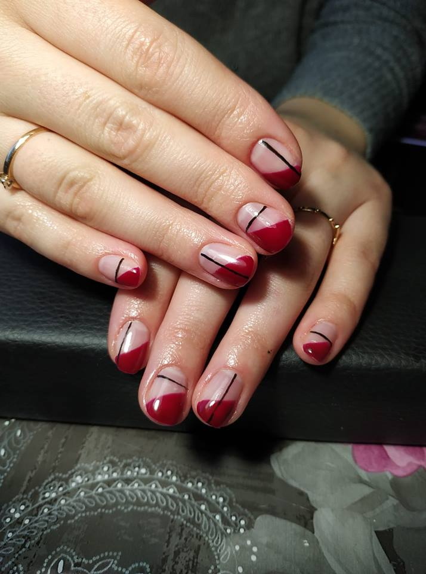
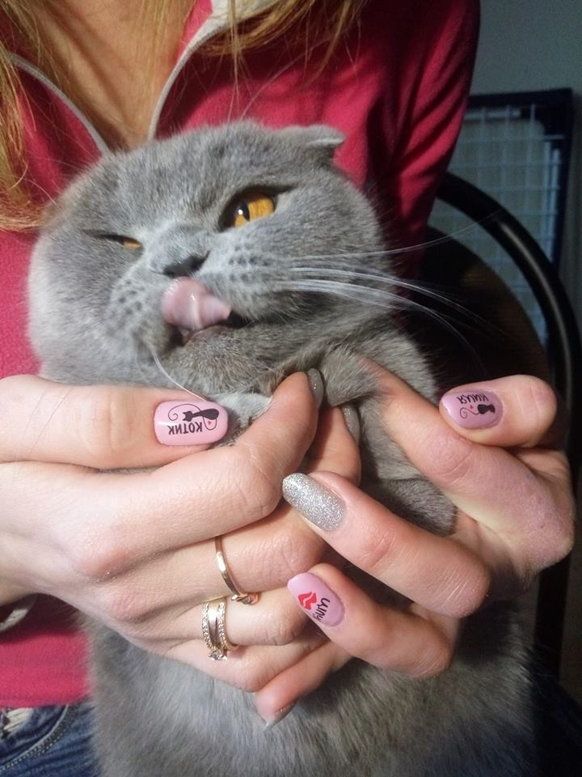
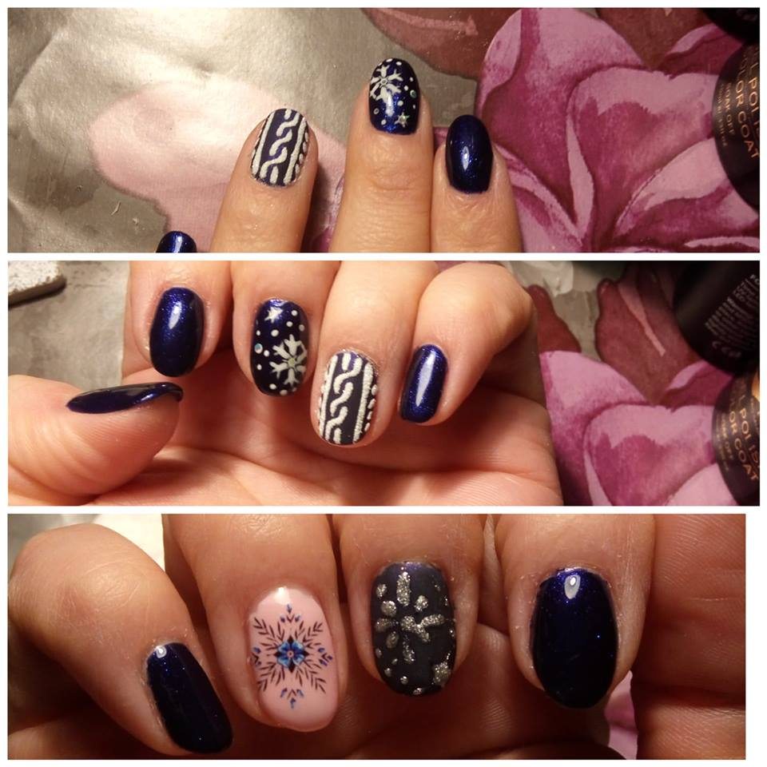
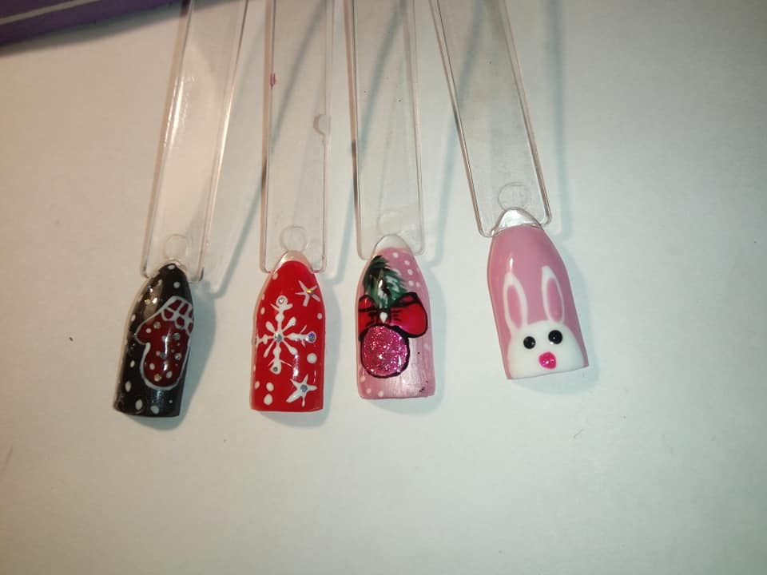
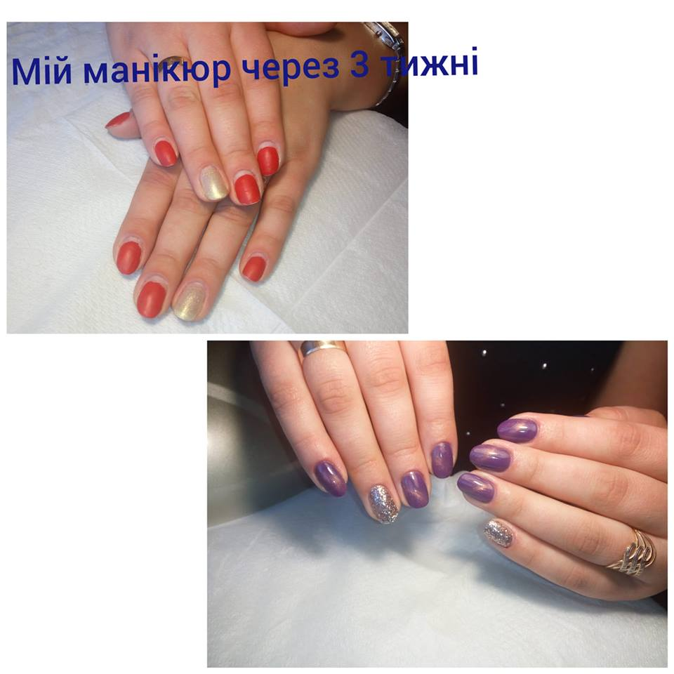
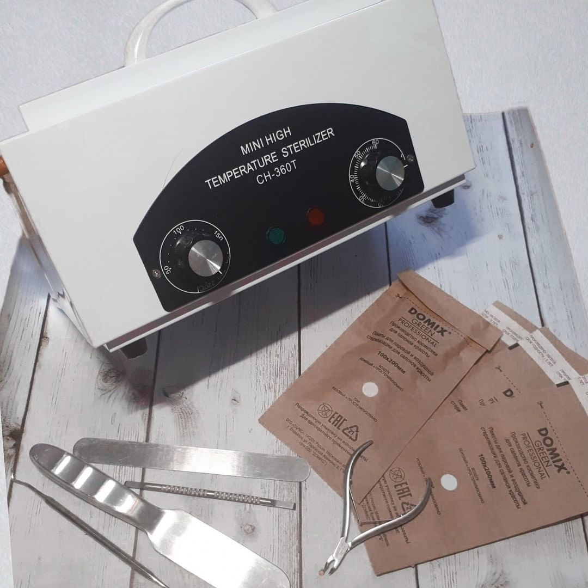
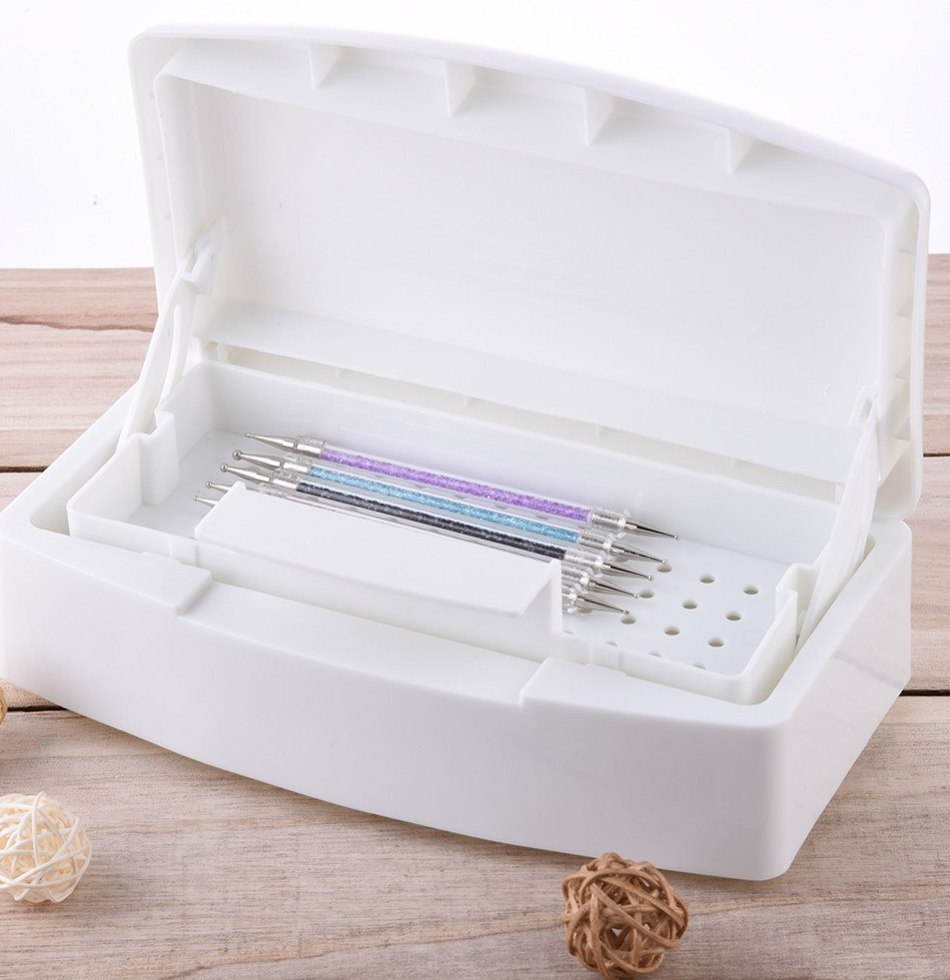

| My works | ||
|---|---|---|
|  |  | |
|  |  |  |
|
Safety of your health
The whole instrument is sterilized by pre-soaking in a physical solution, packed in kraft packets and heat treated in a drying gun. The tool unfolds only with you. |
||
|  |  |